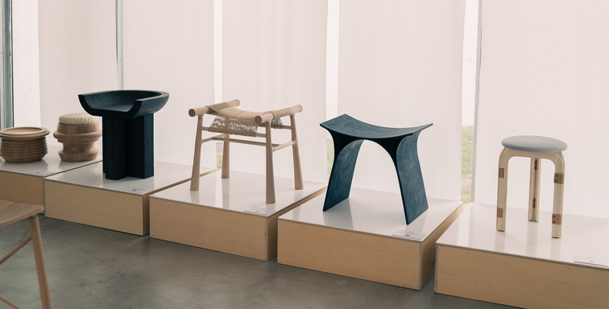

Data Mirror
20.11.2022-05.11.2023
Insgesamt 630 Menschen aus ganz Dänemark haben die Herausforderung angenommen und sind Teil des großen Projekts geworden, das schließlich das sechs Meter hohe Kunstwerk Data Mirror hervorgebracht hat.

Connect Me
20.11.2022-05.11.2023
Die Ausstellung CONNECT ME konzentriert sich auf unsere Verbindungen mit der Welt. In einer Zeit der Klimakrise, zunehmender Ungleichheit, Unsicherheit und Einsamkeit besteht die Notwendigkeit neuer Möglichkeiten der Verbindung.

Bilingual Design
20.11.2022-05.11.2023
Dänisch-ägyptische Möbelpräsentation Trapholt präsentiert BILINGUAL DESIGN, bestehend aus 13 Hockern, die von 21 dänischen Studenten des Instituts für Architektur und Design der Akademie und 3 jungen ägyptischen Designern entworfen wurden.

THE GIOTTO METHOD
10.02.2022 - 20.11.2022
Erik A. Frandsen betrachtete die Pandemie als ein weiteres Beispiel für die Auflösung der Welt. Neben der eigentlichen Pandemie beschäftigte er sich mit dem politischen Zusammenbruch in den Vereinigten Staaten durch Donald Trump, aktuellen Konfrontationen mit strukturellem Sexismus und Rassismus im Gefolge der #MeToo-Bewegung.

AMONG THE TREES
21.11.2021 - 09.11.2022
Among the Trees handelt von unserer großen und vielfältigen Liebe zu und Faszination für die Natur – und von der Bedeutung der Artenvielfalt sowohl für die Natur als auch für uns selbst. Das Projekt konzentriert sich auf das hohe Maß an Handwerk und Kreativität, das sich in ganz Dänemark finden lässt.
COLOURING NEW WORLD
30.09.2021 - 14.08.2022
Tauchen Sie ein in eine Welt extravaganter, wellenförmiger Formen, kräftiger, intensiver Farben und erstklassigem Design in der umfangreichen Ausstellung Verner Panton – Colouring a New World.
KRYPTOMANIA
20.11.2022-05.11.2023
Die Ausstellung zeigt neue Kunst, die uns in Mørkebergs imaginäres Land "Kryptomania" einlädt – ein Land, das Mørkeberg in ihren Gemälden erschafft. Mie Mørkeberg beschäftigt sich damit, wie die heutigen technologischen Möglichkeiten und die Herausforderungen des Klimas die Vorstellung beeinflussen, dass Menschen, Technologie und Natur in einer geteilten Ordnung sein müssen.
DESIGNING DENMARK
10.09.2020 - 15.08.2021
Trapholt präsentiert die umfassendste Arne Jacobsen-Ausstellung der letzten Zeit. Es ist eine sinnliche Reise durch das Leben und Werk eines der beliebtesten Architekten der Welt. Von Jacobsens Kindheit als kreativer und rastloser Junge, der Künstler werden wollte, über sein Studium an der Akademie bis zur Gründung seines ersten Studios als Architekt.

STITCHES BEYOND
28.06.2020 - 07.11.2021
Das Jahr 2020 markiert den 100. Jahrestag der Wiedervereinigung von Nordschleswig und Dänemark. Trapholt wollte seine Feier mit unmittelbarer Relevanz für unser heutiges Leben erfüllen und bat die Textilkünstlerin Iben Høj, ein Kunstwerk zu schaffen, das darüber nachdenkt, wie wir heute über Grenzen denken und fühlen.
LIGHTHOPE
30.05.2020 - 06.12.2020
Ein während der Coronakrise geschaffenes Werk Textilkünstlerin Hanne G und Künstler und Möbeltischler Rasmus Bækkel Fex haben 987 Menschen aus ganz Dänemark zusammengebracht, um gemeinsam LIGHTHOPE zu schaffen, ein während des COVID-19-Lockdowns in Dänemark geschaffenes Kunstwerk.

TINGSTED
19.01.2020 - 10.05.2020
Ein in Zusammenarbeit geschaffenes Werk Der dänische Designer Rasmus Bækkel Fex hat das Werk TINGSTED in Zusammenarbeit mit Drechslern aus ganz Dänemark geschaffen.

Flensburg
20.11.2022-05.11.2023
Anette Harboe Flensburg (*1961) malt architektonische Szenen ohne Menschen. Die Ausstellung "In Company with No-One" bietet eine Reise durch vier Räume, die die Sinne auf verschiedene Weisen anspricht und die Besucher von dunklen, glühenden Orangen und Rottönen zu hellen, bläulichen und kühl getönten Räumen führt.